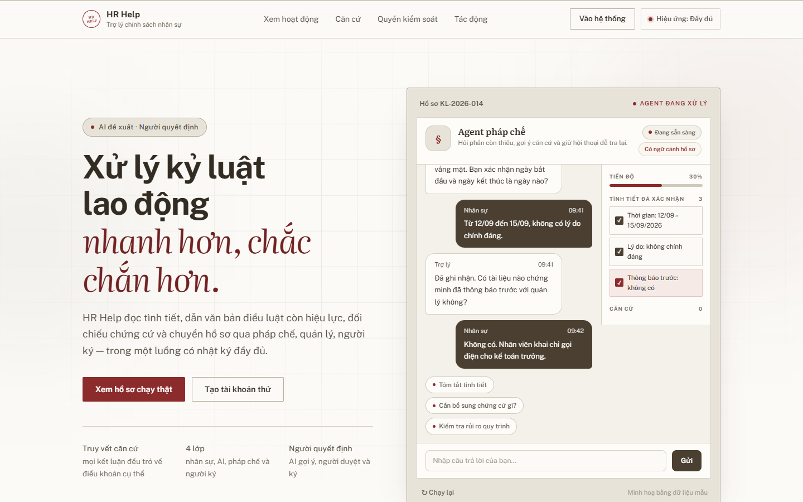
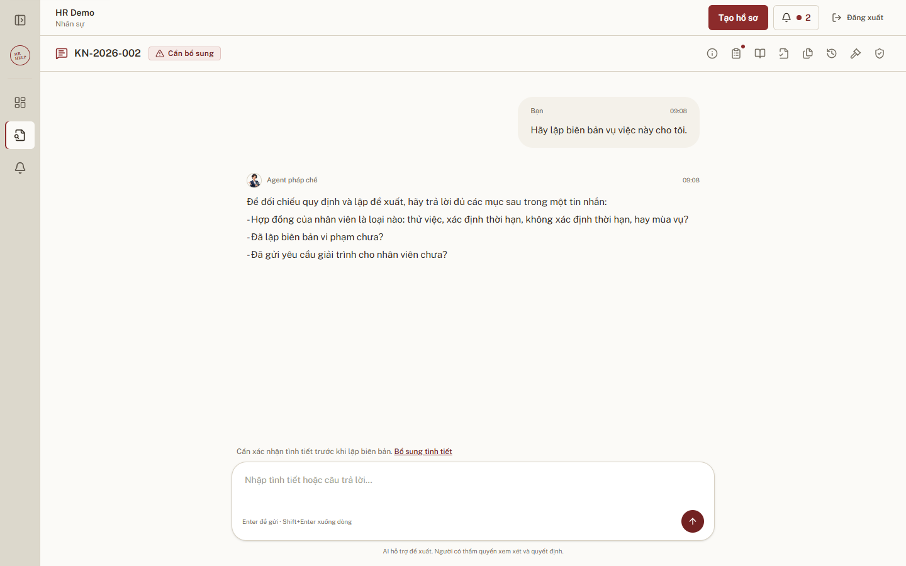

Trợ lý AI cho nghiệp vụ kỷ luật lao động.
Mentors: Ngô Đình Luân, Trần Hữu Khánh Văn

Một vụ phải đối chiếu nhiều tầng văn bản, rất dễ bỏ sót điều khoản.
1 sai sót
Đủ để bản án nghiêng về người lao động.
Hệ quả: bồi thường, buộc nhận lại lao động, phạt hành chính.
Một quy trình năm bước, kết thúc bằng chữ ký của con người.

Agent hỏi cho đủ căn cứ, khóa dữ kiện, rồi trích dẫn điều khoản cụ thể.
Một request đi từ chat đến quyết định, mỗi bước có contract và chốt kiểm tra.
Ba contract: SearchQuery → CaseHandoff → ProposalHandoff. Mỗi lần chạy ghi vào agent_runs và audit_logs.
Hai hợp đồng bất biến. Handoff là dữ liệu nội bộ, không render ra giao diện.
Văn bản phải còn hiệu lực tại ngày vi phạm.
Trích từ kho văn bản của dự án, lọc theo ngày vi phạm.
RBAC, JWT, audit log, chống gửi trùng
Đánh giá 01 / 04 · Corpus và ingestion · Nhãn dự thảo
16 ca · 189 đoạn nguồn · 4 văn bản. Đối chiếu nguồn với các tệp chunk đã lưu.
187/189 đoạn nguồn được giữ.
187/187 đoạn đã được bảo toàn.
186/187 đoạn đã được bảo toàn.
Tìm được 3/5 dẫn chiếu có nhãn.
ND145, Điều 69 và 70 thiếu nội dung nguồn và dẫn chiếu. Có nội dung chỉ còn trong metadata.
NQCT có nhãn điều ngoài danh mục nguồn. Phép đo này chưa kiểm tra DB đang chạy hoặc vector embedding.
Nguồn: ingestion / saved_corpus · Nhãn chờ rà soát; chưa xác nhận tính đúng pháp lý. Không chạy lại toàn bộ quy trình nạp dữ liệu.
Đánh giá 02 / 04 · Routing và tình tiết · Nhãn dự thảo
48 ca · DeepSeek Flash · Thành phần thật của ứng dụng, có cổng kiểm tra Python.
28/28 ca chấm được; 2/30 ca lỗi.
Sau kiểm tra Python · 18 ca.
17/18 ca đạt mọi yêu cầu.
46 ca hoàn thành; 2 ca lỗi xử lý.
R16 và R20 dùng fallback sau khi kiểm tra lại thất bại. Điểm là null, không tính vào accuracy.
F01: mô hình lấy đúng tình tiết thông báo nghỉ, nhưng trường notice_form bị loại ở bước kiểm tra.
Nguồn: routing / golden_live · Routing và trích xuất được đo riêng; chưa đánh giá hội thoại đầu cuối. Nhãn chờ chuyên gia rà soát.
Đánh giá 03 / 04 · Retrieval · Nhãn dự thảo
20 ca · 30 đơn vị chứng cứ · DB thực tế 1.307 chunk. Lần chạy điều tiết: không lỗi API.
Trung bình trên 19 ca có chứng cứ.
Ca âm tính còn lại trả về rỗng đúng.
18 ca có nhãn chứng cứ quan trọng.
19 ca; đoạn chưa có nhãn nhận 0.
Chưa kết luận được precision tổng thể. 17/20 ca có cảnh báo vượt ngân sách chứng cứ.
Chưa đo được lợi ích mở rộng đồ thị. Nội dung và bộ lọc ngày đều đạt; corpus giữ nguyên sau chạy.
Nguồn: retrieval / golden_paced · Nhãn chờ chuyên gia duyệt. Giãn cách rerank 7 giây; thời gian có chờ API không dùng làm độ trễ phục vụ.
Đánh giá 04 / 04 · Chất lượng trả lời · Nhãn dự thảo
RAGAS · 5 mẫu · Retrieval trực tiếp và thành phần đánh giá hồ sơ; chưa phải toàn bộ hội thoại.
Độ đúng so với tham chiếu và độ bao phủ ngữ cảnh còn thấp. RAGAS dùng cách chấm khác với recall theo UUID ở bộ retrieval 20 ca.
Nguồn: case_assessment / live_retrieval_mistral8b · Judge: ministral-8b-2512 · Cột theo thang 0–100%. Faithfulness xét cả tình tiết đầu vào và chính sách. Bộ nhỏ, nhãn tham chiếu chờ chuyên gia rà soát.
Chọn an toàn pháp lý thay vì đoán.
Mỗi chặng chỉ mở khi chặng trước có bằng chứng.
Điều kiện ra: corpus được duyệt, CI xanh, có ngưỡng chi phí và độ trễ.
Điều kiện ra: external research có kiểm soát, thêm nhóm vi phạm mới, đồng bộ HRIS.
Điều kiện ra: khách hàng thử nghiệm, SLA, kiểm toán bảo mật.
Hỏi đáp và demo trực tiếp.
Live demo: c4-app-029.vercel.app · Mentors: Ngô Đình Luân, Trần Hữu Khánh Văn